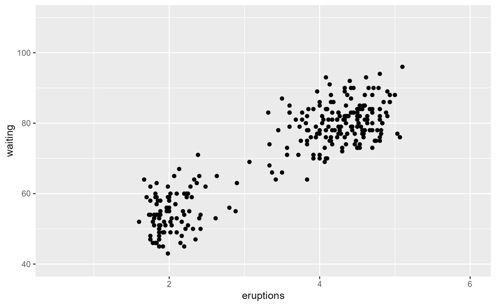
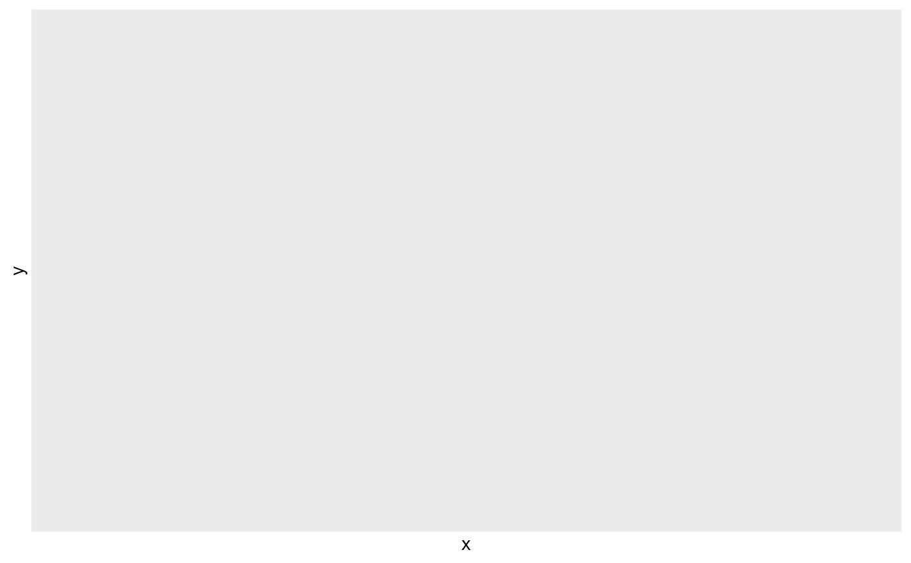
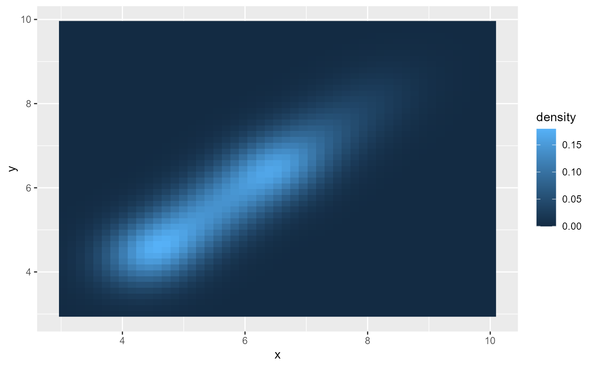
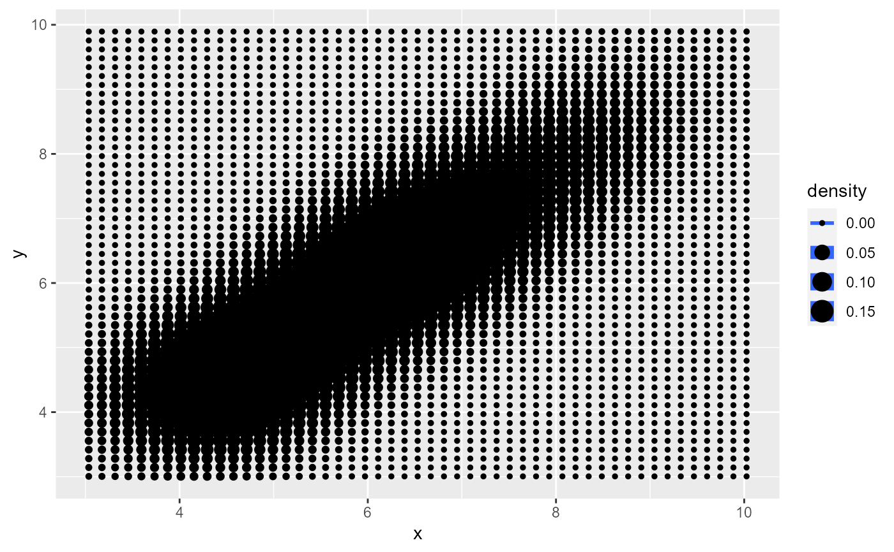
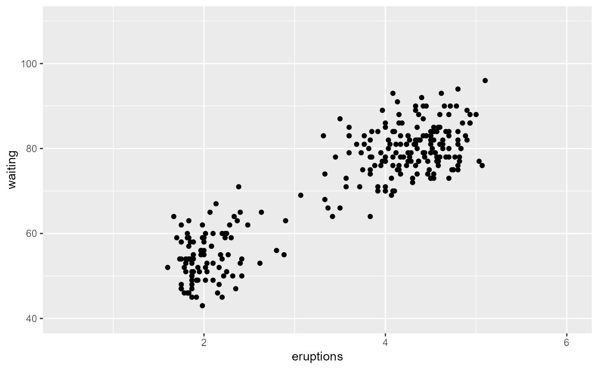
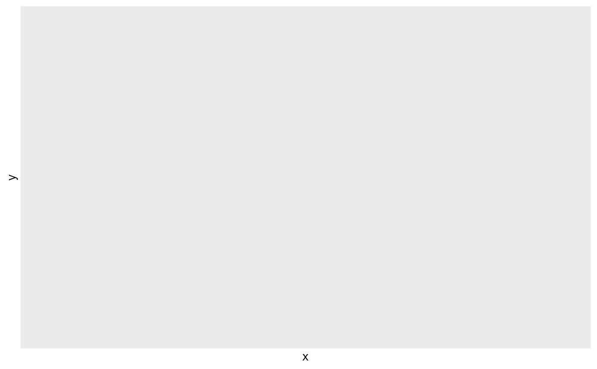
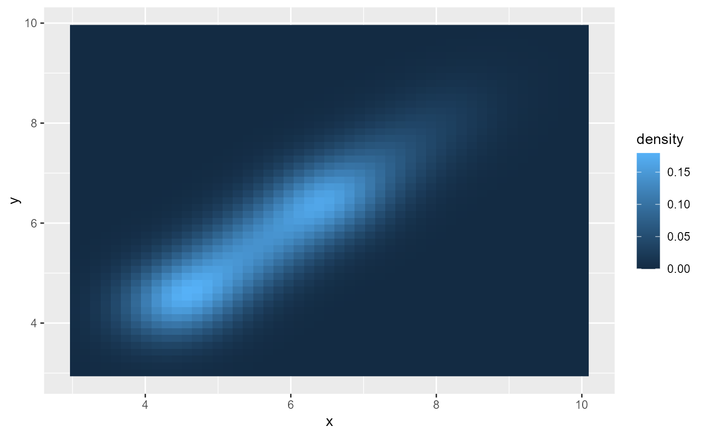
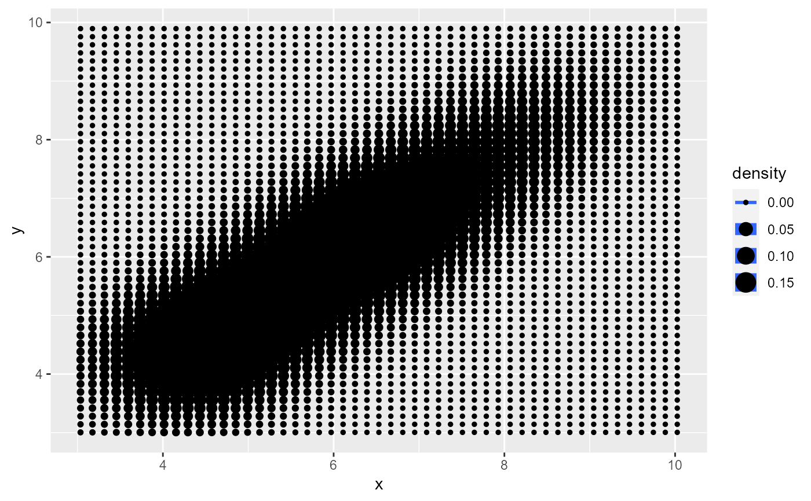

Perform a 2D kernel density estimation using bkde2D and display the
results with contours. This can be useful for dealing with overplotting
Usage
geom_bkde2d(mapping = NULL, data = NULL, stat = "bkde2d",
position = "identity", bandwidth = NULL, range.x = NULL,
lineend = "butt", contour = TRUE, linejoin = "round",
linemitre = 1, na.rm = FALSE, show.legend = NA,
inherit.aes = TRUE, ...)
stat_bkde2d(mapping = NULL, data = NULL, geom = "density2d",
position = "identity", contour = TRUE, bandwidth = NULL,
grid_size = c(51, 51), range.x = NULL, truncate = TRUE,
na.rm = FALSE, show.legend = NA, inherit.aes = TRUE, ...)Arguments
- mapping
Set of aesthetic mappings created by
aes()oraes_(). If specified andinherit.aes = TRUE(the default), it is combined with the default mapping at the top level of the plot. You must supplymappingif there is no plot mapping.- data
The data to be displayed in this layer. There are three options:
If
NULL, the default, the data is inherited from the plot data as specified in the call toggplot().A
data.frame, or other object, will override the plot data. All objects will be fortified to produce a data frame. Seefortify()for which variables will be created.A
functionwill be called with a single argument, the plot data. The return value must be adata.frame, and will be used as the layer data.- stat
The statistical transformation to use on the data for this layer, as a string.
- position
Position adjustment, either as a string, or the result of a call to a position adjustment function.
- bandwidth
the kernel bandwidth smoothing parameter. see
bkde2Dfor details. IfNULL, it will be computed for you but will most likely not yield optimal results. seebkde2Dfor details- range.x
a list containing two vectors, where each vector contains the minimum and maximum values of x at which to compute the estimate for each direction. see
bkde2Dfor details- lineend
Line end style (round, butt, square).
- contour
If
TRUE, contour the results of the 2d density estimation- linejoin
Line join style (round, mitre, bevel).
- linemitre
Line mitre limit (number greater than 1).
- na.rm
If
FALSE, the default, missing values are removed with a warning. IfTRUE, missing values are silently removed.- show.legend
logical. Should this layer be included in the legends?
NA, the default, includes if any aesthetics are mapped.FALSEnever includes, andTRUEalways includes. It can also be a named logical vector to finely select the aesthetics to display.- inherit.aes
If
FALSE, overrides the default aesthetics, rather than combining with them. This is most useful for helper functions that define both data and aesthetics and shouldn't inherit behaviour from the default plot specification, e.g.borders().- ...
Other arguments passed on to
layer(). These are often aesthetics, used to set an aesthetic to a fixed value, likecolour = "red"orsize = 3. They may also be parameters to the paired geom/stat.- geom
default geom to use with this stat
- grid_size
vector containing the number of equally spaced points in each direction over which the density is to be estimated. see
bkde2Dfor details- truncate
logical flag: if TRUE, data with x values outside the range specified by range.x are ignored. see
bkde2Dfor details

Computed variables
Same as stat_contour
See also
geom_contour for contour drawing geom,
stat_sum for another way of dealing with overplotting
Examples
m <- ggplot(faithful, aes(x = eruptions, y = waiting)) +
geom_point() +
xlim(0.5, 6) +
ylim(40, 110)
m + geom_bkde2d(bandwidth=c(0.5, 4))
#> Warning: Computation failed in `stat_bkde2d()`
#> Caused by error in `contour_breaks()`:
#> ! argument "z.range" is missing, with no default
 m + stat_bkde2d(bandwidth=c(0.5, 4), aes(fill = ..level..), geom = "polygon")
#> Warning: The dot-dot notation (`..level..`) was deprecated in ggplot2 3.4.0.
#> ℹ Please use `after_stat(level)` instead.
#> Warning: Computation failed in `stat_bkde2d()`
#> Caused by error in `contour_breaks()`:
#> ! argument "z.range" is missing, with no default

# If you map an aesthetic to a categorical variable, you will get a
# set of contours for each value of that variable
set.seed(4393)
dsmall <- diamonds[sample(nrow(diamonds), 1000), ]
d <- ggplot(dsmall, aes(x, y)) +
geom_bkde2d(bandwidth=c(0.5, 0.5), aes(colour = cut))
d
#> Warning: Computation failed in `stat_bkde2d()`
#> Caused by error in `contour_breaks()`:
#> ! argument "z.range" is missing, with no default

# If we turn contouring off, we can use use geoms like tiles:
d + stat_bkde2d(bandwidth=c(0.5, 0.5), geom = "raster",
aes(fill = ..density..), contour = FALSE)
#> Warning: Computation failed in `stat_bkde2d()`
#> Caused by error in `contour_breaks()`:
#> ! argument "z.range" is missing, with no default

# Or points:
d + stat_bkde2d(bandwidth=c(0.5, 0.5), geom = "point",
aes(size = ..density..), contour = FALSE)
#> Warning: Computation failed in `stat_bkde2d()`
#> Caused by error in `contour_breaks()`:
#> ! argument "z.range" is missing, with no default

m + stat_bkde2d(bandwidth=c(0.5, 4), aes(fill = ..level..), geom = "polygon")
#> Warning: The dot-dot notation (`..level..`) was deprecated in ggplot2 3.4.0.
#> ℹ Please use `after_stat(level)` instead.
#> Warning: Computation failed in `stat_bkde2d()`
#> Caused by error in `contour_breaks()`:
#> ! argument "z.range" is missing, with no default

# If you map an aesthetic to a categorical variable, you will get a
# set of contours for each value of that variable
set.seed(4393)
dsmall <- diamonds[sample(nrow(diamonds), 1000), ]
d <- ggplot(dsmall, aes(x, y)) +
geom_bkde2d(bandwidth=c(0.5, 0.5), aes(colour = cut))
d
#> Warning: Computation failed in `stat_bkde2d()`
#> Caused by error in `contour_breaks()`:
#> ! argument "z.range" is missing, with no default

# If we turn contouring off, we can use use geoms like tiles:
d + stat_bkde2d(bandwidth=c(0.5, 0.5), geom = "raster",
aes(fill = ..density..), contour = FALSE)
#> Warning: Computation failed in `stat_bkde2d()`
#> Caused by error in `contour_breaks()`:
#> ! argument "z.range" is missing, with no default

# Or points:
d + stat_bkde2d(bandwidth=c(0.5, 0.5), geom = "point",
aes(size = ..density..), contour = FALSE)
#> Warning: Computation failed in `stat_bkde2d()`
#> Caused by error in `contour_breaks()`:
#> ! argument "z.range" is missing, with no default
